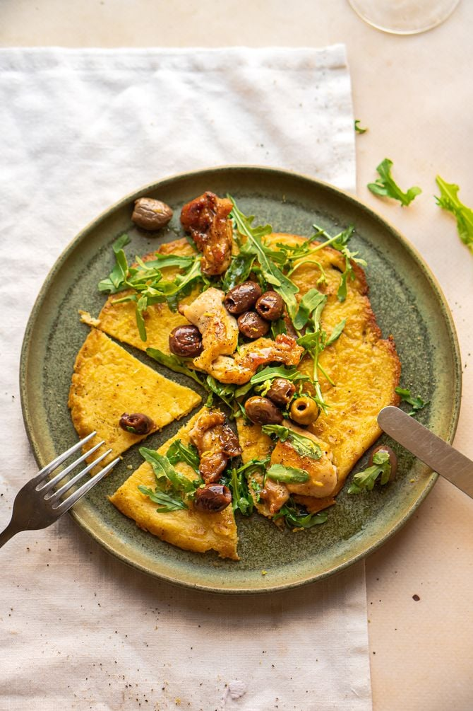

Culy-Homemade
Zeg je hartige pannenkoeken op basis van kikkererwtenmeel, dan zeg je farinata.
Dit Italiaanse streetfood is een specialiteit uit Ligurië en is echt zo’n gerecht dat een vast onderdeel in je repertoire verdient.
Wij beleggen ‘m hier met kip, olijven, rucola en citroen maar voel je vooral vrij om er je eigen draai aan te geven.
terug naar homepagina

benodigdheden:
voor 4 personen
- 450 ml water
- Scheutje olijfolie
- 150 gram kikkererwtenmeel
- Snufje zout
- 4 kippendijen
- Zout en peper
- 100 gram Taggiasche olijven
- Scheutje witte wijn
- Sap en rasp van een halve citroen
- Halve eetlepel honing
- 4 handjes rucola
bereidingswijze:
- meng het water met het kikkererwtennmeel, het zout en de olijfolie in de kom en dek af met plastic folie. laat dit een half uurtje staan.
- Verhit een scheut olie op medium vuur en bak vier pannenkoeken van het beslag.
- Kruid de kippendijen met zout en peper en snijd in reepjes.
Bak deze in een laag olie in een andere pan tot ze gaar zijn.
Voeg daarna een scheutje witte wijn toe en laat de wijn verdampen.
Voeg daarna het citroensap, de olijven en de honing toe en laat nog even meekoken.
- Leg de farinata op borden en beleg met een handje rucola. Verdeel de kip met de olijven erover. Maak af met wat citroenrasp.
- leg alles op het bord en eet smakelijk!
auteur: Mark Bos
datum: 14/11/2022